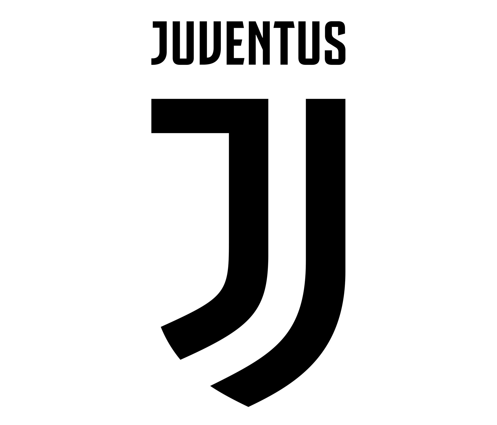

Juventus Football Club, commonly known as Juventus or Juve, is a professional football club based in Turin, Italy. Founded in 1897, it is one of Italy’s oldest and most successful clubs, having won a record 36 Serie A titles and numerous other domestic and international trophies. Known for their black and white striped kits, Juventus plays its home matches at the Allianz Stadium.
